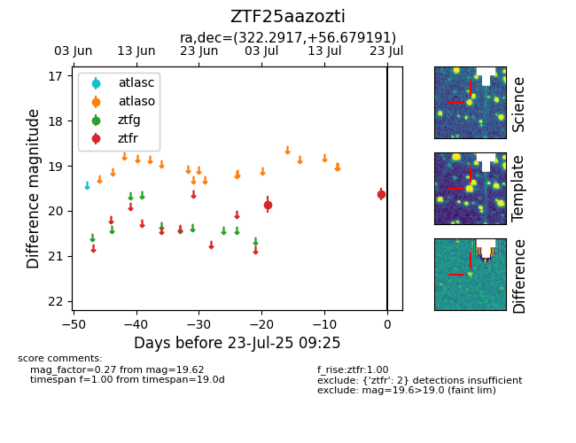

Target ZTF25aazozti at 2025-07-23 11:48, see:
FINK: fink-portal.org/ZTF25aazozti
Lasair: lasair-ztf.lsst.ac.uk/objects/ZTF25aazozti
ALeRCE: alerce.online/object/ZTF25aazozti
alt names
ZTF25aazozti (ztf,fink)
coordinates:
equatorial (ra, dec) = (322.2917,+56.67919)
galactic (l, b) = (97.7594,+4.04244)
photometry
last ztfr=19.62
2 ztfr detections
